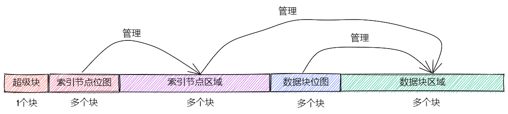

简易文件系统 easy-fs#
本节导读#
本节我们介绍一个简易文件系统的实现 – easy-fs。作为一个文件系统而言，它的磁盘布局（为了叙述方便，我们用磁盘来指代一系列持久存储设备）体现在磁盘上各扇区的内容上，而它解析磁盘布局得到的逻辑目录树结构则是通过内存上的数据结构来访问的，这意味着它要同时涉及到对磁盘和对内存的访问。它们的访问方式是不同的，对于内存直接通过一条指令即可直接读写内存相应的位置，而磁盘的话需要用软件的方式向磁盘发出请求来间接进行读写。因此，我们也要特别注意哪些数据结构是存储在磁盘上，哪些数据结构是存储在内存中的，这样在实现的时候才不会引起混乱。
松耦合模块化设计思路#
大家可以看到，本章的内核功能越来越多，代码量也越来越大（但仅仅是Linux代码量的万分之一左右）。为了减少同学学习内核的分析理解成本，我们需要让内核的各个部分之间尽量松耦合，所以easy-fs 被从内核中分离出来，它的实现分成两个不同的 crate ：
easy-fs为简易文件系统的核心部分，它是一个库形式 crate，实现一种简单的文件系统磁盘布局；easy-fs-fuse是一个能在开发环境（如 Ubuntu）中运行的应用程序，它可以对easy-fs进行测试，或者将为我们内核开发的应用打包为一个 easy-fs 格式的文件系统镜像。
这样，整个easy-fs文件系统的设计开发可以按照应用程序库的开发过程来完成。而且在开发完毕后，可直接放到内核中，形成有文件系统支持的新内核。
能做到这一点，是由于我们在easy-fs设计上，采用了松耦合模块化设计思路。easy-fs与底层设备驱动之间通过抽象接口 BlockDevice 来连接，避免了与设备驱动的绑定。easy-fs通过Rust提供的alloc crate来隔离了操作系统内核的内存管理，避免了直接调用内存管理的内核函数。在底层驱动上，采用的是轮询的方式访问 virtio_blk 虚拟磁盘设备，从而避免了访问外设中断的相关内核函数。easy-fs在设计中避免了直接访问进程相关的数据和函数，从而隔离了操作系统内核的进程管理。
同时，easy-fs本身也划分成不同的层次，形成层次化和模块化的设计架构。easy-fs crate 自下而上大致可以分成五个不同的层次：
磁盘块设备接口层：定义了以块大小为单位对磁盘块设备进行读写的trait接口
块缓存层：在内存中缓存磁盘块的数据，避免频繁读写磁盘
磁盘数据结构层：磁盘上的超级块、位图、索引节点、数据块、目录项等核心数据结构和相关处理
磁盘块管理器层：合并了上述核心数据结构和磁盘布局所形成的磁盘文件系统数据结构，以及基于这些结构的创建/打开文件系统的相关处理和磁盘块的分配和回收处理
索引节点层：管理索引节点（即文件控制块）数据结构，并实现文件创建/文件打开/文件读写等成员函数来向上支持文件操作相关的系统调用
大家也许觉得有五层架构的文件系统是一个很复杂的软件。其实，相对于面向Qemu模拟器的操作系统内核源码所占的2400行左右代码，它只有900行左右的代码，占总代码量的27%。且由于其代码逻辑其实是一种自下而上的线性思维，属于传统的常规编程。相对于异常/中断/系统调用的特权级切换，进程管理中的进程上下文切换，内存管理中的页表地址映射等涉及异常控制流和硬件访问的非常规编程，文件系统的设计实现其实更容易理解。
块设备接口层#
定义设备驱动需要实现的块读写接口 BlockDevice trait的块设备接口层代码在 block_dev.rs 中。
在 easy-fs 库的最底层声明了一个块设备的抽象接口 BlockDevice ：
// easy-fs/src/block_dev.rs
pub trait BlockDevice : Send + Sync + Any {
fn read_block(&self, block_id: usize, buf: &mut [u8]);
fn write_block(&self, block_id: usize, buf: &[u8]);
}
它需要实现两个抽象方法：
read_block将编号为block_id的块从磁盘读入内存中的缓冲区buf；write_block将内存中的缓冲区buf中的数据写入磁盘编号为block_id的块。
在 easy-fs 中并没有一个实现了 BlockDevice Trait 的具体类型。因为块设备仅支持以块为单位进行随机读写，所以需要由具体的块设备驱动来实现这两个方法，实际上这是需要由文件系统的使用者（比如操作系统内核或直接测试 easy-fs 文件系统的 easy-fs-fuse 应用程序）提供并接入到 easy-fs 库的。 easy-fs 库的块缓存层会调用这两个方法，进行块缓存的管理。这也体现了 easy-fs 的泛用性：它可以访问实现了 BlockDevice Trait 的块设备驱动程序。
注解
块与扇区
实际上，块和扇区是两个不同的概念。 扇区 (Sector) 是块设备随机读写的数据单位，通常每个扇区为 512 字节。而块是文件系统存储文件时的数据单位，每个块的大小等同于一个或多个扇区。之前提到过 Linux 的Ext4文件系统的单个块大小默认为 4096 字节。在我们的 easy-fs 实现中一个块和一个扇区同为 512 字节，因此在后面的讲解中我们不再区分扇区和块的概念。
块缓存层#
实现磁盘块缓存功能的块缓存层的代码在 block_cache.rs 中。
由于操作系统频繁读写速度缓慢的磁盘块会极大降低系统性能，因此常见的手段是先通过 read_block 将一个块上的数据从磁盘读到内存中的一个缓冲区中，这个缓冲区中的内容是可以直接读写的，那么后续对这个数据块的大部分访问就可以在内存中完成了。如果缓冲区中的内容被修改了，那么后续还需要通过 write_block 将缓冲区中的内容写回到磁盘块中。
事实上，无论站在代码实现鲁棒性还是性能的角度，将这些缓冲区合理的管理起来都是很有必要的。一种完全不进行任何管理的模式可能是：每当要对一个磁盘块进行读写的时候，都通过 read_block 将块数据读取到一个 临时 创建的缓冲区，并在进行一些操作之后（可选地）将缓冲区的内容写回到磁盘块。从性能上考虑，我们需要尽可能降低实际块读写（即 read/write_block ）的次数，因为每一次调用它们都会产生大量开销。要做到这一点，关键就在于对块读写操作进行 合并 。例如，如果一个块已经被读到缓冲区中了，那么我们就没有必要再读一遍，直接用已有的缓冲区就行了；同时，对于缓冲区中的同一个块的多次修改没有必要每次都写回磁盘，只需等所有的修改都结束之后统一写回磁盘即可。
当磁盘上的数据结构比较复杂的时候，很难通过应用来合理地规划块读取/写入的时机。这不仅可能涉及到复杂的参数传递，稍有不慎还有可能引入同步性问题(目前可以暂时忽略)：即一个块缓冲区修改后的内容在后续的同一个块读操作中不可见，这很致命但又难以调试。
因此，我们的做法是将缓冲区统一管理起来。当我们要读写一个块的时候，首先就是去全局管理器中查看这个块是否已被缓存到内存缓冲区中。如果是这样，则在一段连续时间内对于一个块进行的所有操作均是在同一个固定的缓冲区中进行的，这解决了同步性问题。此外，通过 read/write_block 进行块实际读写的时机完全交给块缓存层的全局管理器处理，上层子系统无需操心。全局管理器会尽可能将更多的块操作合并起来，并在必要的时机发起真正的块实际读写。
块缓存#
块缓存 BlockCache 的定义如下：
// easy-fs/src/lib.rs
pub const BLOCK_SZ: usize = 512;
// easy-fs/src/block_cache.rs
pub struct BlockCache {
cache: [u8; BLOCK_SZ],
block_id: usize,
block_device: Arc<dyn BlockDevice>,
modified: bool,
}
其中：
cache是一个 512 字节的数组，表示位于内存中的缓冲区；block_id记录了这个块缓存来自于磁盘中的块的编号；block_device是一个底层块设备的引用，可通过它进行块读写；modified记录这个块从磁盘载入内存缓存之后，它有没有被修改过。
当我们创建一个 BlockCache 的时候，这将触发一次 read_block 将一个块上的数据从磁盘读到缓冲区 cache ：
// easy-fs/src/block_cache.rs
impl BlockCache {
/// Load a new BlockCache from disk.
pub fn new(
block_id: usize,
block_device: Arc<dyn BlockDevice>
) -> Self {
let mut cache = [0u8; BLOCK_SZ];
block_device.read_block(block_id, &mut cache);
Self {
cache,
block_id,
block_device,
modified: false,
}
}
}
一旦磁盘块已经存在于内存缓存中，CPU 就可以直接访问磁盘块数据了：
1// easy-fs/src/block_cache.rs
2
3impl BlockCache {
4 fn addr_of_offset(&self, offset: usize) -> usize {
5 &self.cache[offset] as *const _ as usize
6 }
7
8 pub fn get_ref<T>(&self, offset: usize) -> &T where T: Sized {
9 let type_size = core::mem::size_of::<T>();
10 assert!(offset + type_size <= BLOCK_SZ);
11 let addr = self.addr_of_offset(offset);
12 unsafe { &*(addr as *const T) }
13 }
14
15 pub fn get_mut<T>(&mut self, offset: usize) -> &mut T where T: Sized {
16 let type_size = core::mem::size_of::<T>();
17 assert!(offset + type_size <= BLOCK_SZ);
18 self.modified = true;
19 let addr = self.addr_of_offset(offset);
20 unsafe { &mut *(addr as *mut T) }
21 }
22}
addr_of_offset可以得到一个BlockCache内部的缓冲区中指定偏移量offset的字节地址；get_ref是一个泛型方法，它可以获取缓冲区中的位于偏移量offset的一个类型为T的磁盘上数据结构的不可变引用。该泛型方法的 Trait Bound 限制类型T必须是一个编译时已知大小的类型，我们通过core::mem::size_of::<T>()在编译时获取类型T的大小，并确认该数据结构被整个包含在磁盘块及其缓冲区之内。这里编译器会自动进行生命周期标注，约束返回的引用的生命周期不超过BlockCache自身，在使用的时候我们会保证这一点。get_mut与get_ref的不同之处在于，get_mut会获取磁盘上数据结构的可变引用，由此可以对数据结构进行修改。由于这些数据结构目前位于内存中的缓冲区中，我们需要将BlockCache的modified标记为 true 表示该缓冲区已经被修改，之后需要将数据写回磁盘块才能真正将修改同步到磁盘。
BlockCache 的设计也体现了 RAII 思想， 它管理着一个缓冲区的生命周期。当 BlockCache 的生命周期结束之后缓冲区也会被从内存中回收，这个时候 modified 标记将会决定数据是否需要写回磁盘：
// easy-fs/src/block_cache.rs
impl BlockCache {
pub fn sync(&mut self) {
if self.modified {
self.modified = false;
self.block_device.write_block(self.block_id, &self.cache);
}
}
}
impl Drop for BlockCache {
fn drop(&mut self) {
self.sync()
}
}
在 BlockCache 被 drop 的时候，它会首先调用 sync 方法，如果自身确实被修改过的话才会将缓冲区的内容写回磁盘。事实上， sync 并不是只有在 drop 的时候才会被调用。在 Linux 中，通常有一个后台进程负责定期将内存中缓冲区的内容写回磁盘。另外有一个 sys_fsync 系统调用可以让应用主动通知内核将一个文件的修改同步回磁盘。由于我们的实现比较简单， sync 仅会在 BlockCache 被 drop 时才会被调用。
我们可以将 get_ref/get_mut 进一步封装为更为易用的形式：
// easy-fs/src/block_cache.rs
impl BlockCache {
pub fn read<T, V>(&self, offset: usize, f: impl FnOnce(&T) -> V) -> V {
f(self.get_ref(offset))
}
pub fn modify<T, V>(&mut self, offset:usize, f: impl FnOnce(&mut T) -> V) -> V {
f(self.get_mut(offset))
}
}
它们的含义是：在 BlockCache 缓冲区偏移量为 offset 的位置获取一个类型为 T 的磁盘上数据结构的不可变/可变引用（分别对应 read/modify ），并让它执行传入的闭包 f 中所定义的操作。注意 read/modify 的返回值是和传入闭包的返回值相同的，因此相当于 read/modify 构成了传入闭包 f 的一层执行环境，让它能够绑定到一个缓冲区上执行。
这里我们传入闭包的类型为 FnOnce ，这是因为闭包里面的变量被捕获的方式涵盖了不可变引用/可变引用/和 move 三种可能性，故而我们需要选取范围最广的 FnOnce 。参数中的 impl 关键字体现了一种类似泛型的静态分发功能。
我们很快将展示 read/modify 接口如何在后续的开发中提供便利。
块缓存全局管理器#
为了避免在块缓存上浪费过多内存，我们希望内存中同时只能驻留有限个磁盘块的缓冲区：
// easy-fs/src/block_cache.rs
const BLOCK_CACHE_SIZE: usize = 16;
块缓存全局管理器的功能是：当我们要对一个磁盘块进行读写时，首先看它是否已经被载入到内存缓存中了，如果已经被载入的话则直接返回，否则需要先读取磁盘块的数据到内存缓存中。此时，如果内存中驻留的磁盘块缓冲区的数量已满，则需要遵循某种缓存替换算法将某个块的缓存从内存中移除，再将刚刚读到的块数据加入到内存缓存中。我们这里使用一种类 FIFO 的简单缓存替换算法，因此在管理器中只需维护一个队列：
// easy-fs/src/block_cache.rs
use alloc::collections::VecDeque;
pub struct BlockCacheManager {
queue: VecDeque<(usize, Arc<Mutex<BlockCache>>)>,
}
impl BlockCacheManager {
pub fn new() -> Self {
Self { queue: VecDeque::new() }
}
}
队列 queue 中管理的是块编号和块缓存的二元组。块编号的类型为 usize ，而块缓存的类型则是一个 Arc<Mutex<BlockCache>> 。这是一个此前频频提及到的 Rust 中的经典组合，它可以同时提供共享引用和互斥访问。这里的共享引用意义在于块缓存既需要在管理器 BlockCacheManager 保留一个引用，还需要以引用的形式返回给块缓存的请求者让它可以对块缓存进行访问。而互斥访问在单核上的意义在于提供内部可变性通过编译，在多核环境下则可以帮助我们避免可能的并发冲突。事实上，一般情况下我们需要在更上层提供保护措施避免两个线程同时对一个块缓存进行读写，因此这里只是比较谨慎的留下一层保险。
警告
Rust Pattern卡片： Arc<Mutex<?>>
先看下Arc和Mutex的正确配合可以达到支持多线程安全读写数据对象。如果需要多线程共享所有权的数据对象，则只用Arc即可。如果需要修改 T 类型中某些成员变量 member ，那直接采用 Arc<Mutex<T>> ，并在修改的时候通过 obj.lock().unwrap().member = xxx 的方式是可行的，但这种编程模式的同步互斥的粒度太大，可能对互斥性能的影响比较大。为了减少互斥性能开销，其实只需要在 T 类型中的需要被修改的成员变量上加 Mutex<_> 即可。如果成员变量也是一个数据结构，还包含更深层次的成员变量，那应该继续下推到最终需要修改的成员变量上去添加 Mutex 。
get_block_cache 方法尝试从块缓存管理器中获取一个编号为 block_id 的块的块缓存，如果找不到，会从磁盘读取到内存中，还有可能会发生缓存替换：
1// easy-fs/src/block_cache.rs
2
3impl BlockCacheManager {
4 pub fn get_block_cache(
5 &mut self,
6 block_id: usize,
7 block_device: Arc<dyn BlockDevice>,
8 ) -> Arc<Mutex<BlockCache>> {
9 if let Some(pair) = self.queue
10 .iter()
11 .find(|pair| pair.0 == block_id) {
12 Arc::clone(&pair.1)
13 } else {
14 // substitute
15 if self.queue.len() == BLOCK_CACHE_SIZE {
16 // from front to tail
17 if let Some((idx, _)) = self.queue
18 .iter()
19 .enumerate()
20 .find(|(_, pair)| Arc::strong_count(&pair.1) == 1) {
21 self.queue.drain(idx..=idx);
22 } else {
23 panic!("Run out of BlockCache!");
24 }
25 }
26 // load block into mem and push back
27 let block_cache = Arc::new(Mutex::new(
28 BlockCache::new(block_id, Arc::clone(&block_device))
29 ));
30 self.queue.push_back((block_id, Arc::clone(&block_cache)));
31 block_cache
32 }
33 }
34}
第 9 行会遍历整个队列试图找到一个编号相同的块缓存，如果找到了，会将块缓存管理器中保存的块缓存的引用复制一份并返回；
第 13 行对应找不到的情况，此时必须将块从磁盘读入内存中的缓冲区。在实际读取之前，需要判断管理器保存的块缓存数量是否已经达到了上限。如果达到了上限（第 15 行）才需要执行缓存替换算法，丢掉某个块缓存并空出一个空位。这里使用一种类 FIFO 算法：每加入一个块缓存时要从队尾加入；要替换时则从队头弹出。但此时队头对应的块缓存可能仍在使用：判断的标志是其强引用计数 \(\geq 2\) ，即除了块缓存管理器保留的一份副本之外，在外面还有若干份副本正在使用。因此，我们的做法是从队头遍历到队尾找到第一个强引用计数恰好为 1 的块缓存并将其替换出去。
那么是否有可能出现队列已满且其中所有的块缓存都正在使用的情形呢？事实上，只要我们的上限
BLOCK_CACHE_SIZE设置的足够大，超过所有应用同时访问的块总数上限，那么这种情况永远不会发生。但是，如果我们的上限设置不足，内核将 panic （基于简单内核设计的思路）。第 27 行开始我们创建一个新的块缓存（会触发
read_block进行块读取）并加入到队尾，最后返回给请求者。
接下来需要创建 BlockCacheManager 的全局实例：
// easy-fs/src/block_cache.rs
lazy_static! {
pub static ref BLOCK_CACHE_MANAGER: Mutex<BlockCacheManager> = Mutex::new(
BlockCacheManager::new()
);
}
pub fn get_block_cache(
block_id: usize,
block_device: Arc<dyn BlockDevice>
) -> Arc<Mutex<BlockCache>> {
BLOCK_CACHE_MANAGER.lock().get_block_cache(block_id, block_device)
}
这样对于其他模块而言，就可以直接通过 get_block_cache 方法来请求块缓存了。这里需要指出的是，它返回的是一个 Arc<Mutex<BlockCache>> ，调用者需要通过 .lock() 获取里层互斥锁 Mutex 才能对最里面的 BlockCache 进行操作，比如通过 read/modify 访问缓冲区里面的磁盘数据结构。
磁盘布局及磁盘上数据结构#
磁盘数据结构层的代码在 layout.rs 和 bitmap.rs 中。
对于一个文件系统而言，最重要的功能是如何将一个逻辑上的文件目录树结构映射到磁盘上，决定磁盘上的每个块应该存储文件相关的哪些数据。为了更容易进行管理和更新，我们需要将磁盘上的数据组织为若干种不同的磁盘上数据结构，并合理安排它们在磁盘中的位置。
easy-fs 磁盘布局概述#
在 easy-fs 磁盘布局中，按照块编号从小到大顺序地分成 5 个不同属性的连续区域：
最开始的区域的长度为一个块，其内容是 easy-fs 超级块 (Super Block)。超级块内以魔数的形式提供了文件系统合法性检查功能，同时还可以定位其他连续区域的位置。
第二个区域是一个索引节点位图，长度为若干个块。它记录了后面的索引节点区域中有哪些索引节点已经被分配出去使用了，而哪些还尚未被分配出去。
第三个区域是索引节点区域，长度为若干个块。其中的每个块都存储了若干个索引节点。
第四个区域是一个数据块位图，长度为若干个块。它记录了后面的数据块区域中有哪些数据块已经被分配出去使用了，而哪些还尚未被分配出去。
最后的区域则是数据块区域，顾名思义，其中的每一个已经分配出去的块保存了文件或目录中的具体数据内容。
easy-fs 的磁盘布局如下图所示：
索引节点 (Inode, Index Node) 是文件系统中的一种重要数据结构。逻辑目录树结构中的每个文件和目录都对应一个 inode ，我们前面提到的文件系统实现中，文件/目录的底层编号实际上就是指 inode 编号。在 inode 中不仅包含了我们通过 stat 工具能够看到的文件/目录的元数据（大小/访问权限/类型等信息），还包含实际保存对应文件/目录数据的数据块（位于最后的数据块区域中）的索引信息，从而能够找到文件/目录的数据被保存在磁盘的哪些块中。从索引方式上看，同时支持直接索引和间接索引。
每个区域中均存储着不同的磁盘数据结构， easy-fs 文件系统能够对磁盘中的数据进行解释并将其结构化。下面我们分别对它们进行介绍。
easy-fs 超级块#
超级块 SuperBlock 的内容如下：
// easy-fs/src/layout.rs
#[repr(C)]
pub struct SuperBlock {
magic: u32,
pub total_blocks: u32,
pub inode_bitmap_blocks: u32,
pub inode_area_blocks: u32,
pub data_bitmap_blocks: u32,
pub data_area_blocks: u32,
}
其中， magic 是一个用于文件系统合法性验证的魔数， total_block 给出文件系统的总块数。注意这并不等同于所在磁盘的总块数，因为文件系统很可能并没有占据整个磁盘。后面的四个字段则分别给出 easy-fs 布局中后四个连续区域的长度各为多少个块。
下面是它实现的方法：
// easy-fs/src/layout.rs
impl SuperBlock {
pub fn initialize(
&mut self,
total_blocks: u32,
inode_bitmap_blocks: u32,
inode_area_blocks: u32,
data_bitmap_blocks: u32,
data_area_blocks: u32,
) {
*self = Self {
magic: EFS_MAGIC,
total_blocks,
inode_bitmap_blocks,
inode_area_blocks,
data_bitmap_blocks,
data_area_blocks,
}
}
pub fn is_valid(&self) -> bool {
self.magic == EFS_MAGIC
}
}
initialize可以在创建一个 easy-fs 的时候对超级块进行初始化，注意各个区域的块数是以参数的形式传入进来的，它们的划分是更上层的磁盘块管理器需要完成的工作。is_valid则可以通过魔数判断超级块所在的文件系统是否合法。
SuperBlock 是一个磁盘上数据结构，它就存放在磁盘上编号为 0 的块的起始处。
位图#
在 easy-fs 布局中存在两类不同的位图，分别对索引节点和数据块进行管理。每个位图都由若干个块组成，每个块大小为 512 bytes，即 4096 bits。每个 bit 都代表一个索引节点/数据块的分配状态， 0 意味着未分配，而 1 则意味着已经分配出去。位图所要做的事情是通过基于 bit 为单位的分配（寻找一个为 0 的bit位并设置为 1）和回收（将bit位清零）来进行索引节点/数据块的分配和回收。
// easy-fs/src/bitmap.rs
pub struct Bitmap {
start_block_id: usize,
blocks: usize,
}
impl Bitmap {
pub fn new(start_block_id: usize, blocks: usize) -> Self {
Self {
start_block_id,
blocks,
}
}
}
位图 Bitmap 中仅保存了它所在区域的起始块编号以及区域的长度为多少个块。通过 new 方法可以新建一个位图。注意 Bitmap 自身是驻留在内存中的，但是它能够表示索引节点/数据块区域中的那些磁盘块的分配情况。磁盘块上位图区域的数据则是要以磁盘数据结构 BitmapBlock 的格式进行操作：
// easy-fs/src/bitmap.rs
type BitmapBlock = [u64; 64];
BitmapBlock 是一个磁盘数据结构，它将位图区域中的一个磁盘块解释为长度为 64 的一个 u64 数组， 每个 u64 打包了一组 64 bits，于是整个数组包含 \(64\times 64=4096\) bits，且可以以组为单位进行操作。
首先来看 Bitmap 如何分配一个bit：
1// easy-fs/src/bitmap.rs
2
3const BLOCK_BITS: usize = BLOCK_SZ * 8;
4
5impl Bitmap {
6 pub fn alloc(&self, block_device: &Arc<dyn BlockDevice>) -> Option<usize> {
7 for block_id in 0..self.blocks {
8 let pos = get_block_cache(
9 block_id + self.start_block_id as usize,
10 Arc::clone(block_device),
11 )
12 .lock()
13 .modify(0, |bitmap_block: &mut BitmapBlock| {
14 if let Some((bits64_pos, inner_pos)) = bitmap_block
15 .iter()
16 .enumerate()
17 .find(|(_, bits64)| **bits64 != u64::MAX)
18 .map(|(bits64_pos, bits64)| {
19 (bits64_pos, bits64.trailing_ones() as usize)
20 }) {
21 // modify cache
22 bitmap_block[bits64_pos] |= 1u64 << inner_pos;
23 Some(block_id * BLOCK_BITS + bits64_pos * 64 + inner_pos as usize)
24 } else {
25 None
26 }
27 });
28 if pos.is_some() {
29 return pos;
30 }
31 }
32 None
33 }
34}
其主要思路是遍历区域中的每个块，再在每个块中以bit组（每组 64 bits）为单位进行遍历，找到一个尚未被全部分配出去的组，最后在里面分配一个bit。它将会返回分配的bit所在的位置，等同于索引节点/数据块的编号。如果所有bit均已经被分配出去了，则返回 None 。
第 7 行枚举区域中的每个块（编号为 block_id ），在循环内部我们需要读写这个块，在块内尝试找到一个空闲的bit并置 1 。一旦涉及到块的读写，就需要用到块缓存层提供的接口：
第 8 行我们调用
get_block_cache获取块缓存，注意我们传入的块编号是区域起始块编号start_block_id加上区域内的块编号block_id得到的块设备上的块编号。第 12 行我们通过
.lock()获取块缓存的互斥锁从而可以对块缓存进行访问。第 13 行我们使用到了
BlockCache::modify接口。它传入的偏移量offset为 0，这是因为整个块上只有一个BitmapBlock，它的大小恰好为 512 字节。因此我们需要从块的开头开始才能访问到完整的BitmapBlock。同时，传给它的闭包需要显式声明参数类型为&mut BitmapBlock，不然的话，BlockCache的泛型方法modify/get_mut无法得知应该用哪个类型来解析块上的数据。在声明之后，编译器才能在这里将两个方法中的泛型T实例化为具体类型BitmapBlock。总结一下，这里
modify的含义就是：从缓冲区偏移量为 0 的位置开始将一段连续的数据（数据的长度随具体类型而定）解析为一个BitmapBlock并要对该数据结构进行修改。在闭包内部，我们可以使用这个BitmapBlock的可变引用bitmap_block对它进行访问。read/get_ref的用法完全相同，后面将不再赘述。闭包的主体位于第 14~26 行。它尝试在
bitmap_block中找到一个空闲的bit并返回其位置，如果不存在的话则返回None。它的思路是，遍历每 64 bits构成的组（一个u64），如果它并没有达到u64::MAX（即 \(2^{64}-1\) ），则通过u64::trailing_ones找到最低的一个 0 并置为 1 。如果能够找到的话，bit组的编号将保存在变量bits64_pos中，而分配的bit在组内的位置将保存在变量inner_pos中。在返回分配的bit编号的时候，它的计算方式是block_id*BLOCK_BITS+bits64_pos*64+inner_pos。注意闭包中的block_id并不在闭包的参数列表中，因此它是从外部环境（即自增block_id的循环）中捕获到的。
我们一旦在某个块中找到一个空闲的bit并成功分配，就不再考虑后续的块。第 28 行体现了提前返回的思路。
警告
Rust 语法卡片：闭包
闭包是持有外部环境变量的函数。所谓外部环境, 就是指创建闭包时所在的词法作用域。Rust中定义的闭包，按照对外部环境变量的使用方式（借用、复制、转移所有权），分为三个类型: Fn、FnMut、FnOnce。Fn类型的闭包会在闭包内部以共享借用的方式使用环境变量；FnMut类型的闭包会在闭包内部以独占借用的方式使用环境变量；而FnOnce类型的闭包会在闭包内部以所有者的身份使用环境变量。由此可见，根据闭包内使用环境变量的方式，即可判断创建出来的闭包的类型。
接下来看 Bitmap 如何回收一个bit：
// easy-fs/src/bitmap.rs
/// Return (block_pos, bits64_pos, inner_pos)
fn decomposition(mut bit: usize) -> (usize, usize, usize) {
let block_pos = bit / BLOCK_BITS;
bit = bit % BLOCK_BITS;
(block_pos, bit / 64, bit % 64)
}
impl Bitmap {
pub fn dealloc(&self, block_device: &Arc<dyn BlockDevice>, bit: usize) {
let (block_pos, bits64_pos, inner_pos) = decomposition(bit);
get_block_cache(
block_pos + self.start_block_id,
Arc::clone(block_device)
).lock().modify(0, |bitmap_block: &mut BitmapBlock| {
assert!(bitmap_block[bits64_pos] & (1u64 << inner_pos) > 0);
bitmap_block[bits64_pos] -= 1u64 << inner_pos;
});
}
}
dealloc 方法首先调用 decomposition 函数将bit编号 bit 分解为区域中的块编号 block_pos 、块内的组编号 bits64_pos 以及组内编号 inner_pos 的三元组，这样就能精确定位待回收的bit，随后将其清零即可。
磁盘上索引节点#
在磁盘上的索引节点区域，每个块上都保存着若干个索引节点 DiskInode ：
// easy-fs/src/layout.rs
const INODE_DIRECT_COUNT: usize = 28;
#[repr(C)]
pub struct DiskInode {
pub size: u32,
pub direct: [u32; INODE_DIRECT_COUNT],
pub indirect1: u32,
pub indirect2: u32,
type_: DiskInodeType,
}
#[derive(PartialEq)]
pub enum DiskInodeType {
File,
Directory,
}
每个文件/目录在磁盘上均以一个 DiskInode 的形式存储。其中包含文件/目录的元数据： size 表示文件/目录内容的字节数， type_ 表示索引节点的类型 DiskInodeType ，目前仅支持文件 File 和目录 Directory 两种类型。其余的 direct/indirect1/indirect2 都是存储文件内容/目录内容的数据块的索引，这也是索引节点名字的由来。
为了尽可能节约空间，在进行索引的时候，块的编号用一个 u32 存储。索引方式分成直接索引和间接索引两种：
当文件很小的时候，只需用到直接索引，
direct数组中最多可以指向INODE_DIRECT_COUNT个数据块，当取值为 28 的时候，通过直接索引可以找到 14KiB 的内容。当文件比较大的时候，不仅直接索引的
direct数组装满，还需要用到一级间接索引indirect1。它指向一个一级索引块，这个块也位于磁盘布局的数据块区域中。这个一级索引块中的每个u32都用来指向数据块区域中一个保存该文件内容的数据块，因此，最多能够索引 \(\frac{512}{4}=128\) 个数据块，对应 64KiB 的内容。当文件大小超过直接索引和一级索引支持的容量上限 78KiB 的时候，就需要用到二级间接索引
indirect2。它指向一个位于数据块区域中的二级索引块。二级索引块中的每个u32指向一个不同的一级索引块，这些一级索引块也位于数据块区域中。因此，通过二级间接索引最多能够索引 \(128\times 64\text{KiB}=8\text{MiB}\) 的内容。
为了充分利用空间，我们将 DiskInode 的大小设置为 128 字节，每个块正好能够容纳 4 个 DiskInode 。在后续需要支持更多类型的元数据的时候，可以适当缩减直接索引 direct 的块数，并将节约出来的空间用来存放其他元数据，仍可保证 DiskInode 的总大小为 128 字节。
通过 initialize 方法可以初始化一个 DiskInode 为一个文件或目录：
// easy-fs/src/layout.rs
impl DiskInode {
/// indirect1 and indirect2 block are allocated only when they are needed.
pub fn initialize(&mut self, type_: DiskInodeType) {
self.size = 0;
self.direct.iter_mut().for_each(|v| *v = 0);
self.indirect1 = 0;
self.indirect2 = 0;
self.type_ = type_;
}
}
需要注意的是， indirect1/2 均被初始化为 0 。因为最开始文件内容的大小为 0 字节，并不会用到一级/二级索引。为了节约空间，内核会按需分配一级/二级索引块。此外，直接索引 direct 也被清零。
is_file 和 is_dir 两个方法可以用来确认 DiskInode 的类型为文件还是目录：
// easy-fs/src/layout.rs
impl DiskInode {
pub fn is_dir(&self) -> bool {
self.type_ == DiskInodeType::Directory
}
pub fn is_file(&self) -> bool {
self.type_ == DiskInodeType::File
}
}
get_block_id 方法体现了 DiskInode 最重要的数据块索引功能，它可以从索引中查到它自身用于保存文件内容的第 block_id 个数据块的块编号，这样后续才能对这个数据块进行访问：
1// easy-fs/src/layout.rs
2
3const INODE_INDIRECT1_COUNT: usize = BLOCK_SZ / 4;
4const INDIRECT1_BOUND: usize = DIRECT_BOUND + INODE_INDIRECT1_COUNT;
5type IndirectBlock = [u32; BLOCK_SZ / 4];
6
7impl DiskInode {
8 pub fn get_block_id(&self, inner_id: u32, block_device: &Arc<dyn BlockDevice>) -> u32 {
9 let inner_id = inner_id as usize;
10 if inner_id < INODE_DIRECT_COUNT {
11 self.direct[inner_id]
12 } else if inner_id < INDIRECT1_BOUND {
13 get_block_cache(self.indirect1 as usize, Arc::clone(block_device))
14 .lock()
15 .read(0, |indirect_block: &IndirectBlock| {
16 indirect_block[inner_id - INODE_DIRECT_COUNT]
17 })
18 } else {
19 let last = inner_id - INDIRECT1_BOUND;
20 let indirect1 = get_block_cache(
21 self.indirect2 as usize,
22 Arc::clone(block_device)
23 )
24 .lock()
25 .read(0, |indirect2: &IndirectBlock| {
26 indirect2[last / INODE_INDIRECT1_COUNT]
27 });
28 get_block_cache(
29 indirect1 as usize,
30 Arc::clone(block_device)
31 )
32 .lock()
33 .read(0, |indirect1: &IndirectBlock| {
34 indirect1[last % INODE_INDIRECT1_COUNT]
35 })
36 }
37 }
38}
这里需要说明的是：
第 10/12/18 行分别利用直接索引/一级索引和二级索引，具体选用哪种索引方式取决于
block_id所在的区间。在对一个索引块进行操作的时候，我们将其解析为磁盘数据结构
IndirectBlock，实质上就是一个u32数组，每个都指向一个下一级索引块或者数据块。对于二级索引的情况，需要先查二级索引块找到挂在它下面的一级索引块，再通过一级索引块找到数据块。
在对文件/目录初始化之后，它的 size 均为 0 ，此时并不会索引到任何数据块。它需要通过 increase_size 方法逐步扩充容量。在扩充的时候，自然需要一些新的数据块来作为索引块或是保存内容的数据块。我们需要先编写一些辅助方法来确定在容量扩充的时候额外需要多少块：
// easy-fs/src/layout.rs
impl DiskInode {
/// Return block number correspond to size.
pub fn data_blocks(&self) -> u32 {
Self::_data_blocks(self.size)
}
fn _data_blocks(size: u32) -> u32 {
(size + BLOCK_SZ as u32 - 1) / BLOCK_SZ as u32
}
/// Return number of blocks needed include indirect1/2.
pub fn total_blocks(size: u32) -> u32 {
let data_blocks = Self::_data_blocks(size) as usize;
let mut total = data_blocks as usize;
// indirect1
if data_blocks > INODE_DIRECT_COUNT {
total += 1;
}
// indirect2
if data_blocks > INDIRECT1_BOUND {
total += 1;
// sub indirect1
total += (data_blocks - INDIRECT1_BOUND + INODE_INDIRECT1_COUNT - 1) / INODE_INDIRECT1_COUNT;
}
total as u32
}
pub fn blocks_num_needed(&self, new_size: u32) -> u32 {
assert!(new_size >= self.size);
Self::total_blocks(new_size) - Self::total_blocks(self.size)
}
}
data_blocks 方法可以计算为了容纳自身 size 字节的内容需要多少个数据块。计算的过程只需用 size 除以每个块的大小 BLOCK_SZ 并向上取整。而 total_blocks 不仅包含数据块，还需要统计索引块。计算的方法也很简单，先调用 data_blocks 得到需要多少数据块，再根据数据块数目所处的区间统计索引块即可。 blocks_num_needed 可以计算将一个 DiskInode 的 size 扩容到 new_size 需要额外多少个数据和索引块。这只需要调用两次 total_blocks 作差即可。
下面给出 increase_size 方法的接口：
// easy-fs/src/layout.rs
impl DiskInode {
pub fn increase_size(
&mut self,
new_size: u32,
new_blocks: Vec<u32>,
block_device: &Arc<dyn BlockDevice>,
);
}
其中 new_size 表示容量扩充之后的文件大小； new_blocks 是一个保存了本次容量扩充所需块编号的向量，这些块都是由上层的磁盘块管理器负责分配的。 increase_size 的实现有些复杂，在这里不详细介绍。大致的思路是按照直接索引、一级索引再到二级索引的顺序进行扩充。
有些时候我们还需要清空文件的内容并回收所有数据和索引块。这是通过 clear_size 方法来实现的：
// easy-fs/src/layout.rs
impl DiskInode {
/// Clear size to zero and return blocks that should be deallocated.
///
/// We will clear the block contents to zero later.
pub fn clear_size(&mut self, block_device: &Arc<dyn BlockDevice>) -> Vec<u32>;
}
它会将回收的所有块的编号保存在一个向量中返回给磁盘块管理器。它的实现原理和 increase_size 一样也分为多个阶段，在这里不展开。
接下来需要考虑通过 DiskInode 来读写它索引的那些数据块中的数据。这些数据可以被视为一个字节序列，而每次都是选取其中的一段连续区间进行操作，以 read_at 为例：
1// easy-fs/src/layout.rs
2
3type DataBlock = [u8; BLOCK_SZ];
4
5impl DiskInode {
6 pub fn read_at(
7 &self,
8 offset: usize,
9 buf: &mut [u8],
10 block_device: &Arc<dyn BlockDevice>,
11 ) -> usize {
12 let mut start = offset;
13 let end = (offset + buf.len()).min(self.size as usize);
14 if start >= end {
15 return 0;
16 }
17 let mut start_block = start / BLOCK_SZ;
18 let mut read_size = 0usize;
19 loop {
20 // calculate end of current block
21 let mut end_current_block = (start / BLOCK_SZ + 1) * BLOCK_SZ;
22 end_current_block = end_current_block.min(end);
23 // read and update read size
24 let block_read_size = end_current_block - start;
25 let dst = &mut buf[read_size..read_size + block_read_size];
26 get_block_cache(
27 self.get_block_id(start_block as u32, block_device) as usize,
28 Arc::clone(block_device),
29 )
30 .lock()
31 .read(0, |data_block: &DataBlock| {
32 let src = &data_block[start % BLOCK_SZ..start % BLOCK_SZ + block_read_size];
33 dst.copy_from_slice(src);
34 });
35 read_size += block_read_size;
36 // move to next block
37 if end_current_block == end { break; }
38 start_block += 1;
39 start = end_current_block;
40 }
41 read_size
42 }
43}
它的含义是：将文件内容从 offset 字节开始的部分读到内存中的缓冲区 buf 中，并返回实际读到的字节数。如果文件剩下的内容还足够多，那么缓冲区会被填满；否则文件剩下的全部内容都会被读到缓冲区中。具体实现上有很多细节，但大致的思路是遍历位于字节区间 start,end 中间的那些块，将它们视为一个 DataBlock （也就是一个字节数组），并将其中的部分内容复制到缓冲区 buf 中适当的区域。 start_block 维护着目前是文件内部第多少个数据块，需要首先调用 get_block_id 从索引中查到这个数据块在块设备中的块编号，随后才能传入 get_block_cache 中将正确的数据块缓存到内存中进行访问。
在第 14 行进行了简单的边界条件判断，如果要读取的内容超出了文件的范围，那么直接返回 0 ，表示读取不到任何内容。
write_at 的实现思路基本上和 read_at 完全相同。但不同的是 write_at 不会出现失败的情况；只要 Inode 管理的数据块的大小足够，传入的整个缓冲区的数据都必定会被写入到文件中。当从 offset 开始的区间超出了文件范围的时候，就需要调用者在调用 write_at 之前提前调用 increase_size ，将文件大小扩充到区间的右端，保证写入的完整性。
数据块与目录项#
作为一个文件而言，它的内容在文件系统看来没有任何既定的格式，都只是一个字节序列。因此每个保存内容的数据块都只是一个字节数组：
// easy-fs/src/layout.rs
type DataBlock = [u8; BLOCK_SZ];
然而，目录的内容却需要遵从一种特殊的格式。在我们的实现中，它可以看成一个目录项的序列，每个目录项都是一个二元组，二元组的首个元素是目录下面的一个文件（或子目录）的文件名（或目录名），另一个元素则是文件（或子目录）所在的索引节点编号。目录项相当于目录树结构上的子树节点，我们需要通过它来一级一级的找到实际要访问的文件或目录。目录项 DirEntry 的定义如下：
// easy-fs/src/layout.rs
const NAME_LENGTH_LIMIT: usize = 27;
#[repr(C)]
pub struct DirEntry {
name: [u8; NAME_LENGTH_LIMIT + 1],
inode_number: u32,
}
pub const DIRENT_SZ: usize = 32;
目录项 Dirent 最大允许保存长度为 27 的文件/目录名（数组 name 中最末的一个字节留给 \0 ），且它自身占据空间 32 字节，每个数据块可以存储 16 个目录项。我们可以通过 empty 和 new 分别生成一个空的目录项或是一个合法的目录项：
// easy-fs/src/layout.rs
impl DirEntry {
pub fn empty() -> Self {
Self {
name: [0u8; NAME_LENGTH_LIMIT + 1],
inode_number: 0,
}
}
pub fn new(name: &str, inode_number: u32) -> Self {
let mut bytes = [0u8; NAME_LENGTH_LIMIT + 1];
&mut bytes[..name.len()].copy_from_slice(name.as_bytes());
Self {
name: bytes,
inode_number,
}
}
}
在从目录的内容中读取目录项或者是将目录项写入目录的时候，我们需要将目录项转化为缓冲区（即字节切片）的形式来符合索引节点 Inode 数据结构中的 read_at 或 write_at 方法接口的要求：
// easy-fs/src/layout.rs
impl DirEntry {
pub fn as_bytes(&self) -> &[u8] {
unsafe {
core::slice::from_raw_parts(
self as *const _ as usize as *const u8,
DIRENT_SZ,
)
}
}
pub fn as_bytes_mut(&mut self) -> &mut [u8] {
unsafe {
core::slice::from_raw_parts_mut(
self as *mut _ as usize as *mut u8,
DIRENT_SZ,
)
}
}
}
此外，通过 name 和 inode_number 方法可以取出目录项中的内容：
// easy-fs/src/layout.rs
impl DirEntry {
pub fn name(&self) -> &str {
let len = (0usize..).find(|i| self.name[*i] == 0).unwrap();
core::str::from_utf8(&self.name[..len]).unwrap()
}
pub fn inode_number(&self) -> u32 {
self.inode_number
}
}
磁盘块管理器#
本层的代码在 efs.rs 中。
上面介绍了 easy-fs 的磁盘布局设计以及数据的组织方式 – 即各类磁盘数据结构。但是它们都是以比较零散的形式分开介绍的，并没有体现出磁盘布局上各个区域是如何划分的。实现 easy-fs 的整体磁盘布局，将各段区域及上面的磁盘数据结构结构整合起来就是简易文件系统 EasyFileSystem 的职责。它知道每个布局区域所在的位置，磁盘块的分配和回收也需要经过它才能完成，因此某种意义上讲它还可以看成一个磁盘块管理器。
注意从这一层开始，所有的数据结构就都放在内存上了。
// easy-fs/src/efs.rs
pub struct EasyFileSystem {
pub block_device: Arc<dyn BlockDevice>,
pub inode_bitmap: Bitmap,
pub data_bitmap: Bitmap,
inode_area_start_block: u32,
data_area_start_block: u32,
}
EasyFileSystem 包含索引节点和数据块的两个位图 inode_bitmap 和 data_bitmap ，还记录下索引节点区域和数据块区域起始块编号方便确定每个索引节点和数据块在磁盘上的具体位置。我们还要在其中保留块设备的一个指针 block_device ，在进行后续操作的时候，该指针会被拷贝并传递给下层的数据结构，让它们也能够直接访问块设备。
通过 create 方法可以在块设备上创建并初始化一个 easy-fs 文件系统：
1// easy-fs/src/efs.rs
2
3impl EasyFileSystem {
4 pub fn create(
5 block_device: Arc<dyn BlockDevice>,
6 total_blocks: u32,
7 inode_bitmap_blocks: u32,
8 ) -> Arc<Mutex<Self>> {
9 // calculate block size of areas & create bitmaps
10 let inode_bitmap = Bitmap::new(1, inode_bitmap_blocks as usize);
11 let inode_num = inode_bitmap.maximum();
12 let inode_area_blocks =
13 ((inode_num * core::mem::size_of::<DiskInode>() + BLOCK_SZ - 1) / BLOCK_SZ) as u32;
14 let inode_total_blocks = inode_bitmap_blocks + inode_area_blocks;
15 let data_total_blocks = total_blocks - 1 - inode_total_blocks;
16 let data_bitmap_blocks = (data_total_blocks + 4096) / 4097;
17 let data_area_blocks = data_total_blocks - data_bitmap_blocks;
18 let data_bitmap = Bitmap::new(
19 (1 + inode_bitmap_blocks + inode_area_blocks) as usize,
20 data_bitmap_blocks as usize,
21 );
22 let mut efs = Self {
23 block_device: Arc::clone(&block_device),
24 inode_bitmap,
25 data_bitmap,
26 inode_area_start_block: 1 + inode_bitmap_blocks,
27 data_area_start_block: 1 + inode_total_blocks + data_bitmap_blocks,
28 };
29 // clear all blocks
30 for i in 0..total_blocks {
31 get_block_cache(
32 i as usize,
33 Arc::clone(&block_device)
34 )
35 .lock()
36 .modify(0, |data_block: &mut DataBlock| {
37 for byte in data_block.iter_mut() { *byte = 0; }
38 });
39 }
40 // initialize SuperBlock
41 get_block_cache(0, Arc::clone(&block_device))
42 .lock()
43 .modify(0, |super_block: &mut SuperBlock| {
44 super_block.initialize(
45 total_blocks,
46 inode_bitmap_blocks,
47 inode_area_blocks,
48 data_bitmap_blocks,
49 data_area_blocks,
50 );
51 });
52 // write back immediately
53 // create a inode for root node "/"
54 assert_eq!(efs.alloc_inode(), 0);
55 let (root_inode_block_id, root_inode_offset) = efs.get_disk_inode_pos(0);
56 get_block_cache(
57 root_inode_block_id as usize,
58 Arc::clone(&block_device)
59 )
60 .lock()
61 .modify(root_inode_offset, |disk_inode: &mut DiskInode| {
62 disk_inode.initialize(DiskInodeType::Directory);
63 });
64 Arc::new(Mutex::new(efs))
65 }
66}
第 10~21 行根据传入的参数计算每个区域各应该包含多少块。根据 inode 位图的大小计算 inode 区域至少需要多少个块才能够使得 inode 位图中的每个bit都能够有一个实际的 inode 可以对应，这样就确定了 inode 位图区域和 inode 区域的大小。剩下的块都分配给数据块位图区域和数据块区域。我们希望数据块位图中的每个bit仍然能够对应到一个数据块，但是数据块位图又不能过小，不然会造成某些数据块永远不会被使用。因此数据块位图区域最合理的大小是剩余的块数除以 4097 再上取整，因为位图中的每个块能够对应 4096 个数据块。其余的块就都作为数据块使用。
第 22 行创建
EasyFileSystem实例efs。第 30 行首先将块设备的前
total_blocks个块清零，因为 easy-fs 要用到它们，这也是为初始化做准备。第 41 行将位于块设备编号为 0 块上的超级块进行初始化，只需传入之前计算得到的每个区域的块数就行了。
第 54~63 行创建根目录
/。首先需要调用alloc_inode在 inode 位图中分配一个 inode ，由于这是第一次分配，它的编号固定是 0 。接下来需要将分配到的 inode 初始化为 easy-fs 中的唯一一个目录，故需要调用get_disk_inode_pos来根据 inode 编号获取该 inode 所在的块的编号以及块内偏移，之后就可以将它们传给get_block_cache和modify了。
通过 open 方法可以从一个已写入了 easy-fs 镜像的块设备上打开我们的 easy-fs ：
// easy-fs/src/efs.rs
impl EasyFileSystem {
pub fn open(block_device: Arc<dyn BlockDevice>) -> Arc<Mutex<Self>> {
// read SuperBlock
get_block_cache(0, Arc::clone(&block_device))
.lock()
.read(0, |super_block: &SuperBlock| {
assert!(super_block.is_valid(), "Error loading EFS!");
let inode_total_blocks =
super_block.inode_bitmap_blocks + super_block.inode_area_blocks;
let efs = Self {
block_device,
inode_bitmap: Bitmap::new(
1,
super_block.inode_bitmap_blocks as usize
),
data_bitmap: Bitmap::new(
(1 + inode_total_blocks) as usize,
super_block.data_bitmap_blocks as usize,
),
inode_area_start_block: 1 + super_block.inode_bitmap_blocks,
data_area_start_block: 1 + inode_total_blocks + super_block.data_bitmap_blocks,
};
Arc::new(Mutex::new(efs))
})
}
}
它只需将块设备编号为 0 的块作为超级块读取进来，就可以从中知道 easy-fs 的磁盘布局，由此可以构造 efs 实例。
EasyFileSystem 知道整个磁盘布局，即可以从 inode位图 或数据块位图上分配的 bit 编号，来算出各个存储inode和数据块的磁盘块在磁盘上的实际位置。
// easy-fs/src/efs.rs
impl EasyFileSystem {
pub fn get_disk_inode_pos(&self, inode_id: u32) -> (u32, usize) {
let inode_size = core::mem::size_of::<DiskInode>();
let inodes_per_block = (BLOCK_SZ / inode_size) as u32;
let block_id = self.inode_area_start_block + inode_id / inodes_per_block;
(block_id, (inode_id % inodes_per_block) as usize * inode_size)
}
pub fn get_data_block_id(&self, data_block_id: u32) -> u32 {
self.data_area_start_block + data_block_id
}
}
inode 和数据块的分配/回收也由 EasyFileSystem 知 负责：
// easy-fs/src/efs.rs
impl EasyFileSystem {
pub fn alloc_inode(&mut self) -> u32 {
self.inode_bitmap.alloc(&self.block_device).unwrap() as u32
}
/// Return a block ID not ID in the data area.
pub fn alloc_data(&mut self) -> u32 {
self.data_bitmap.alloc(&self.block_device).unwrap() as u32 + self.data_area_start_block
}
pub fn dealloc_data(&mut self, block_id: u32) {
get_block_cache(
block_id as usize,
Arc::clone(&self.block_device)
)
.lock()
.modify(0, |data_block: &mut DataBlock| {
data_block.iter_mut().for_each(|p| { *p = 0; })
});
self.data_bitmap.dealloc(
&self.block_device,
(block_id - self.data_area_start_block) as usize
)
}
}
注意：
alloc_data和dealloc_data分配/回收数据块传入/返回的参数都表示数据块在块设备上的编号，而不是在数据块位图中分配的bit编号；dealloc_inode未实现，因为现在还不支持文件删除。
索引节点#
服务于文件相关系统调用的索引节点层的代码在 vfs.rs 中。
EasyFileSystem 实现了磁盘布局并能够将磁盘块有效的管理起来。但是对于文件系统的使用者而言，他们往往不关心磁盘布局是如何实现的，而是更希望能够直接看到目录树结构中逻辑上的文件和目录。为此需要设计索引节点 Inode 暴露给文件系统的使用者，让他们能够直接对文件和目录进行操作。 Inode 和 DiskInode 的区别从它们的名字中就可以看出： DiskInode 放在磁盘块中比较固定的位置，而 Inode 是放在内存中的记录文件索引节点信息的数据结构。
// easy-fs/src/vfs.rs
pub struct Inode {
block_id: usize,
block_offset: usize,
fs: Arc<Mutex<EasyFileSystem>>,
block_device: Arc<dyn BlockDevice>,
}
block_id 和 block_offset 记录该 Inode 对应的 DiskInode 保存在磁盘上的具体位置方便我们后续对它进行访问。 fs 是指向 EasyFileSystem 的一个指针，因为对 Inode 的种种操作实际上都是要通过底层的文件系统来完成。
仿照 BlockCache::read/modify ，我们可以设计两个方法来简化对于 Inode 对应的磁盘上的 DiskInode 的访问流程，而不是每次都需要 get_block_cache.lock.read/modify ：
// easy-fs/src/vfs.rs
impl Inode {
fn read_disk_inode<V>(&self, f: impl FnOnce(&DiskInode) -> V) -> V {
get_block_cache(
self.block_id,
Arc::clone(&self.block_device)
).lock().read(self.block_offset, f)
}
fn modify_disk_inode<V>(&self, f: impl FnOnce(&mut DiskInode) -> V) -> V {
get_block_cache(
self.block_id,
Arc::clone(&self.block_device)
).lock().modify(self.block_offset, f)
}
}
下面分别介绍文件系统的使用者对于文件系统的一些常用操作：
获取根目录的 inode#
文件系统的使用者在通过 EasyFileSystem::open 从装载了 easy-fs 镜像的块设备上打开 easy-fs 之后，要做的第一件事情就是获取根目录的 Inode 。因为 EasyFileSystem 目前仅支持绝对路径，对于任何文件/目录的索引都必须从根目录开始向下逐级进行。等到索引完成之后， EasyFileSystem 才能对文件/目录进行操作。事实上 EasyFileSystem 提供了另一个名为 root_inode 的方法来获取根目录的 Inode :
// easy-fs/src/efs.rs
impl EasyFileSystem {
pub fn root_inode(efs: &Arc<Mutex<Self>>) -> Inode {
let block_device = Arc::clone(&efs.lock().block_device);
// acquire efs lock temporarily
let (block_id, block_offset) = efs.lock().get_disk_inode_pos(0);
// release efs lock
Inode::new(
block_id,
block_offset,
Arc::clone(efs),
block_device,
)
}
}
// easy-fs/src/vfs.rs
impl Inode {
/// We should not acquire efs lock here.
pub fn new(
block_id: u32,
block_offset: usize,
fs: Arc<Mutex<EasyFileSystem>>,
block_device: Arc<dyn BlockDevice>,
) -> Self {
Self {
block_id: block_id as usize,
block_offset,
fs,
block_device,
}
}
}
对于 root_inode 的初始化，是在调用 Inode::new 时将传入的 inode_id 设置为 0 ，因为根目录对应于文件系统中第一个分配的 inode ，因此它的 inode_id 总会是 0 。不会在调用 Inode::new 过程中尝试获取整个 EasyFileSystem 的锁来查询 inode 在块设备中的位置，而是在调用它之前预先查询并作为参数传过去。
文件索引#
前面 提到过，为了尽可能简化文件系统设计， EasyFileSystem 是一个扁平化的文件系统，即在目录树上仅有一个目录——那就是作为根节点的根目录。所有的文件都在根目录下面。于是，我们不必实现目录索引。文件索引的查找比较简单，仅需在根目录的目录项中根据文件名找到文件的 inode 编号即可。由于没有子目录的存在，这个过程只会进行一次。
// easy-fs/src/vfs.rs
impl Inode {
pub fn find(&self, name: &str) -> Option<Arc<Inode>> {
let fs = self.fs.lock();
self.read_disk_inode(|disk_inode| {
self.find_inode_id(name, disk_inode)
.map(|inode_id| {
let (block_id, block_offset) = fs.get_disk_inode_pos(inode_id);
Arc::new(Self::new(
block_id,
block_offset,
self.fs.clone(),
self.block_device.clone(),
))
})
})
}
fn find_inode_id(
&self,
name: &str,
disk_inode: &DiskInode,
) -> Option<u32> {
// assert it is a directory
assert!(disk_inode.is_dir());
let file_count = (disk_inode.size as usize) / DIRENT_SZ;
let mut dirent = DirEntry::empty();
for i in 0..file_count {
assert_eq!(
disk_inode.read_at(
DIRENT_SZ * i,
dirent.as_bytes_mut(),
&self.block_device,
),
DIRENT_SZ,
);
if dirent.name() == name {
return Some(dirent.inode_number() as u32);
}
}
None
}
}
find 方法只会被根目录 Inode 调用，文件系统中其他文件的 Inode 不会调用这个方法。它首先调用 find_inode_id 方法，尝试从根目录的 DiskInode 上找到要索引的文件名对应的 inode 编号。这就需要将根目录内容中的所有目录项都读到内存进行逐个比对。如果能够找到，则 find 方法会根据查到 inode 编号，对应生成一个 Inode 用于后续对文件的访问。
这里需要注意，包括 find 在内，所有暴露给文件系统的使用者的文件系统操作（还包括接下来将要介绍的几种），全程均需持有 EasyFileSystem 的互斥锁（相对而言，文件系统内部的操作，如之前的 Inode::new 或是上面的 find_inode_id ，都是假定在已持有 efs 锁的情况下才被调用的，因此它们不应尝试获取锁）。这能够保证在多核情况下，同时最多只能有一个核在进行文件系统相关操作。这样也许会带来一些不必要的性能损失，但我们目前暂时先这样做。如果我们在这里加锁的话，其实就能够保证块缓存的互斥访问了。
文件列举#
ls 方法可以收集根目录下的所有文件的文件名并以向量的形式返回，这个方法只有根目录的 Inode 才会调用：
// easy-fs/src/vfs.rs
impl Inode {
pub fn ls(&self) -> Vec<String> {
let _fs = self.fs.lock();
self.read_disk_inode(|disk_inode| {
let file_count = (disk_inode.size as usize) / DIRENT_SZ;
let mut v: Vec<String> = Vec::new();
for i in 0..file_count {
let mut dirent = DirEntry::empty();
assert_eq!(
disk_inode.read_at(
i * DIRENT_SZ,
dirent.as_bytes_mut(),
&self.block_device,
),
DIRENT_SZ,
);
v.push(String::from(dirent.name()));
}
v
})
}
}
注解
Rust 语法卡片： _ 在匹配中的使用方法
可以看到在 ls 操作中，我们虽然获取了 efs 锁，但是这里并不会直接访问 EasyFileSystem 实例，其目的仅仅是锁住该实例避免其他核在同时间的访问造成并发冲突。因此，我们将其绑定到以 _ 开头的变量 _fs 中，这样即使我们在其作用域中并没有使用它，编译器也不会报警告。然而，我们不能将其绑定到变量 _ 上。因为从匹配规则可以知道这意味着该操作会被编译器丢弃，从而无法达到获取锁的效果。
文件创建#
create 方法可以在根目录下创建一个文件，该方法只有根目录的 Inode 会调用：
1// easy-fs/src/vfs.rs
2
3impl Inode {
4 pub fn create(&self, name: &str) -> Option<Arc<Inode>> {
5 let mut fs = self.fs.lock();
6 if self.modify_disk_inode(|root_inode| {
7 // assert it is a directory
8 assert!(root_inode.is_dir());
9 // has the file been created?
10 self.find_inode_id(name, root_inode)
11 }).is_some() {
12 return None;
13 }
14 // create a new file
15 // alloc a inode with an indirect block
16 let new_inode_id = fs.alloc_inode();
17 // initialize inode
18 let (new_inode_block_id, new_inode_block_offset)
19 = fs.get_disk_inode_pos(new_inode_id);
20 get_block_cache(
21 new_inode_block_id as usize,
22 Arc::clone(&self.block_device)
23 ).lock().modify(new_inode_block_offset, |new_inode: &mut DiskInode| {
24 new_inode.initialize(DiskInodeType::File);
25 });
26 self.modify_disk_inode(|root_inode| {
27 // append file in the dirent
28 let file_count = (root_inode.size as usize) / DIRENT_SZ;
29 let new_size = (file_count + 1) * DIRENT_SZ;
30 // increase size
31 self.increase_size(new_size as u32, root_inode, &mut fs);
32 // write dirent
33 let dirent = DirEntry::new(name, new_inode_id);
34 root_inode.write_at(
35 file_count * DIRENT_SZ,
36 dirent.as_bytes(),
37 &self.block_device,
38 );
39 });
40
41 let (block_id, block_offset) = fs.get_disk_inode_pos(new_inode_id);
42 // return inode
43 Some(Arc::new(Self::new(
44 block_id,
45 block_offset,
46 self.fs.clone(),
47 self.block_device.clone(),
48 )))
49 // release efs lock automatically by compiler
50 }
51}
第 6~13 行，检查文件是否已经在根目录下，如果找到的话返回
None；第 14~25 行，为待创建文件分配一个新的 inode 并进行初始化；
第 26~39 行，将待创建文件的目录项插入到根目录的内容中，使得之后可以索引到。
文件清空#
在以某些标志位打开文件（例如带有 CREATE 标志打开一个已经存在的文件）的时候，需要首先将文件清空。在索引到文件的 Inode 之后，可以调用 clear 方法：
// easy-fs/src/vfs.rs
impl Inode {
pub fn clear(&self) {
let mut fs = self.fs.lock();
self.modify_disk_inode(|disk_inode| {
let size = disk_inode.size;
let data_blocks_dealloc = disk_inode.clear_size(&self.block_device);
assert!(data_blocks_dealloc.len() == DiskInode::total_blocks(size) as usize);
for data_block in data_blocks_dealloc.into_iter() {
fs.dealloc_data(data_block);
}
});
}
}
这会将该文件占据的索引块和数据块回收。
文件读写#
从根目录索引到一个文件之后，可以对它进行读写。注意：和 DiskInode 一样，这里的读写作用在字节序列的一段区间上：
// easy-fs/src/vfs.rs
impl Inode {
pub fn read_at(&self, offset: usize, buf: &mut [u8]) -> usize {
let _fs = self.fs.lock();
self.read_disk_inode(|disk_inode| {
disk_inode.read_at(offset, buf, &self.block_device)
})
}
pub fn write_at(&self, offset: usize, buf: &[u8]) -> usize {
let mut fs = self.fs.lock();
self.modify_disk_inode(|disk_inode| {
self.increase_size((offset + buf.len()) as u32, disk_inode, &mut fs);
disk_inode.write_at(offset, buf, &self.block_device)
})
}
}
具体实现比较简单，需要注意在执行 DiskInode::write_at 之前先调用 increase_size 对自身进行扩容：
// easy-fs/src/vfs.rs
impl Inode {
fn increase_size(
&self,
new_size: u32,
disk_inode: &mut DiskInode,
fs: &mut MutexGuard<EasyFileSystem>,
) {
if new_size < disk_inode.size {
return;
}
let blocks_needed = disk_inode.blocks_num_needed(new_size);
let mut v: Vec<u32> = Vec::new();
for _ in 0..blocks_needed {
v.push(fs.alloc_data());
}
disk_inode.increase_size(new_size, v, &self.block_device);
}
}
这里会从 EasyFileSystem 中分配一些用于扩容的数据块并传给 DiskInode::increase_size 。
在用户态测试 easy-fs 的功能#
easy-fs 架构设计的一个优点在于它可以在Rust应用开发环境（Windows/macOS/Ubuntu）中，按照应用程序库的开发方式来进行测试，不必过早的放到内核中测试运行。众所周知，内核运行在裸机环境上，对其进行调试很困难。而面向应用的开发环境对于调试的支持更为完善，从基于命令行的 GDB 到 IDE 提供的图形化调试界面都能给文件系统的开发带来很大帮助。另外一点是，由于 easy-fs 需要放到在裸机上运行的内核中，使得 easy-fs 只能使用 no_std 模式，不能在 easy-fs 中调用标准库 std 。但是在把 easy-fs 作为一个应用的库运行的时候，可以暂时让使用它的应用程序调用标准库 std ，这也会在开发调试上带来一些方便。
easy-fs 的测试放在另一个名为 easy-fs-fuse 的应用程序中，不同于 easy-fs ，它是一个可以调用标准库 std 的应用程序 ，能够在Rust应用开发环境上运行并很容易调试。
在Rust应用开发环境中模拟块设备#
从文件系统的使用者角度来看，它仅需要提供一个实现了 BlockDevice Trait 的块设备用来装载文件系统，之后就可以使用 Inode 来方便地进行文件系统操作了。但是在开发环境上，我们如何来提供这样一个块设备呢？答案是用 Linux （当然也可以是Windows/MacOS等其它通用操作系统）上的一个文件模拟一个块设备。
// easy-fs-fuse/src/main.rs
use std::fs::File;
use easy-fs::BlockDevice;
const BLOCK_SZ: usize = 512;
struct BlockFile(Mutex<File>);
impl BlockDevice for BlockFile {
fn read_block(&self, block_id: usize, buf: &mut [u8]) {
let mut file = self.0.lock().unwrap();
file.seek(SeekFrom::Start((block_id * BLOCK_SZ) as u64))
.expect("Error when seeking!");
assert_eq!(file.read(buf).unwrap(), BLOCK_SZ, "Not a complete block!");
}
fn write_block(&self, block_id: usize, buf: &[u8]) {
let mut file = self.0.lock().unwrap();
file.seek(SeekFrom::Start((block_id * BLOCK_SZ) as u64))
.expect("Error when seeking!");
assert_eq!(file.write(buf).unwrap(), BLOCK_SZ, "Not a complete block!");
}
}
std::file::File 由 Rust 标准库 std 提供，可以访问 Linux 上的一个文件。我们将它包装成 BlockFile 类型来模拟一块磁盘，为它实现 BlockDevice 接口。注意 File 本身仅通过 read/write 接口是不能实现随机读写的，在访问一个特定的块的时候，我们必须先 seek 到这个块的开头位置。
测试主函数为 easy-fs-fuse/src/main.rs 中的 efs_test 函数中，我们只需在 easy-fs-fuse 目录下 cargo test 即可执行该测试：
running 1 test
test efs_test ... ok
test result: ok. 1 passed; 0 failed; 0 ignored; 0 measured; 0 filtered out; finished in 1.27s
看到上面的内容就说明测试通过了。
efs_test 展示了 easy-fs 库的使用方法，大致分成以下几个步骤：
打开块设备#
let block_file = Arc::new(BlockFile(Mutex::new({
let f = OpenOptions::new()
.read(true)
.write(true)
.create(true)
.open("target/fs.img")?;
f.set_len(8192 * 512).unwrap();
f
})));
EasyFileSystem::create(
block_file.clone(),
4096,
1,
);
第一步我们需要打开虚拟块设备。这里我们在 Linux 上创建文件 easy-fs-fuse/target/fs.img 来新建一个虚拟块设备，并将它的容量设置为 8192 个块即 4MiB 。在创建的时候需要将它的访问权限设置为可读可写。
由于我们在进行测试，需要初始化测试环境，因此在虚拟块设备 block_file 上初始化 easy-fs 文件系统，这会将 block_file 用于放置 easy-fs 镜像的前 4096 个块上的数据覆盖，然后变成仅有一个根目录的初始文件系统。如果块设备上已经放置了一个合法的 easy-fs 镜像，则我们不必这样做。
进行各种文件操作#
拿到根目录 root_inode 之后，可以通过它进行各种文件操作，目前支持以下几种：
通过
create创建文件。通过
ls列举根目录下的文件。通过
find根据文件名索引文件。
当通过索引获取根目录下的一个文件的 inode 之后则可以进行如下操作：
通过
clear将文件内容清空。通过
read/write_at读写文件，注意我们需要将读写在文件中开始的位置offset作为一个参数传递进去。
测试方法在这里不详细介绍，大概是每次清空文件 filea 的内容，向其中写入一个不同长度的随机数字字符串，然后再全部读取出来，验证和写入的内容一致。其中有一个细节是：用来生成随机字符串的 rand crate 并不支持 no_std ，因此只有在用户态我们才能更容易进行测试。
将应用打包为 easy-fs 镜像#
在第六章中我们需要将所有的应用都链接到内核中，随后在应用管理器中通过应用名进行索引来找到应用的 ELF 数据。这样做有一个缺点，就是会造成内核体积过度膨胀。在 k210 平台上可以很明显的感觉到从第五章开始随着应用数量的增加，向开发板上烧写内核镜像的耗时显著增长。同时这也会浪费内存资源，因为未被执行的应用也占据了内存空间。在实现了 easy-fs 文件系统之后，终于可以将这些应用打包到 easy-fs 镜像中放到磁盘中，当我们要执行应用的时候只需从文件系统中取出ELF 执行文件格式的应用 并加载到内存中执行即可，这样就避免了前面章节的存储开销等问题。
easy-fs-fuse 的主体 easy-fs-pack 函数就实现了这个功能：
1// easy-fs-fuse/src/main.rs
2
3use clap::{Arg, App};
4
5fn easy_fs_pack() -> std::io::Result<()> {
6 let matches = App::new("EasyFileSystem packer")
7 .arg(Arg::with_name("source")
8 .short("s")
9 .long("source")
10 .takes_value(true)
11 .help("Executable source dir(with backslash)")
12 )
13 .arg(Arg::with_name("target")
14 .short("t")
15 .long("target")
16 .takes_value(true)
17 .help("Executable target dir(with backslash)")
18 )
19 .get_matches();
20 let src_path = matches.value_of("source").unwrap();
21 let target_path = matches.value_of("target").unwrap();
22 println!("src_path = {}\ntarget_path = {}", src_path, target_path);
23 let block_file = Arc::new(BlockFile(Mutex::new({
24 let f = OpenOptions::new()
25 .read(true)
26 .write(true)
27 .create(true)
28 .open(format!("{}{}", target_path, "fs.img"))?;
29 f.set_len(8192 * 512).unwrap();
30 f
31 })));
32 // 4MiB, at most 4095 files
33 let efs = EasyFileSystem::create(
34 block_file.clone(),
35 8192,
36 1,
37 );
38 let root_inode = Arc::new(EasyFileSystem::root_inode(&efs));
39 let apps: Vec<_> = read_dir(src_path)
40 .unwrap()
41 .into_iter()
42 .map(|dir_entry| {
43 let mut name_with_ext = dir_entry.unwrap().file_name().into_string().unwrap();
44 name_with_ext.drain(name_with_ext.find('.').unwrap()..name_with_ext.len());
45 name_with_ext
46 })
47 .collect();
48 for app in apps {
49 // load app data from host file system
50 let mut host_file = File::open(format!("{}{}", target_path, app)).unwrap();
51 let mut all_data: Vec<u8> = Vec::new();
52 host_file.read_to_end(&mut all_data).unwrap();
53 // create a file in easy-fs
54 let inode = root_inode.create(app.as_str()).unwrap();
55 // write data to easy-fs
56 inode.write_at(0, all_data.as_slice());
57 }
58 // list apps
59 for app in root_inode.ls() {
60 println!("{}", app);
61 }
62 Ok(())
63}
为了实现
easy-fs-fuse和os/user的解耦，第 6~21 行使用clapcrate 进行命令行参数解析，需要通过-s和-t分别指定应用的源代码目录和保存应用 ELF 的目录，而不是在easy-fs-fuse中硬编码。如果解析成功的话它们会分别被保存在变量src_path和target_path中。第 23~38 行依次完成：创建 4MiB 的 easy-fs 镜像文件、进行 easy-fs 初始化、获取根目录 inode 。
第 39 行获取源码目录中的每个应用的源代码文件并去掉后缀名，收集到向量
apps中。第 48 行开始，枚举
apps中的每个应用，从放置应用执行程序的目录中找到对应应用的 ELF 文件（这是一个 Linux 上的文件），并将数据读入内存。接着需要在 easy-fs 中创建一个同名文件并将 ELF 数据写入到这个文件中。这个过程相当于将 Linux 上的文件系统中的一个文件复制到我们的 easy-fs 中。
尽管没有进行任何同步写回磁盘的操作，我们也不用担心块缓存中的修改没有写回磁盘。因为在 easy-fs-fuse 这个应用正常退出的过程中，块缓存因生命周期结束会被回收，届时如果块缓存的 modified 标志为 true ，就会将其修改写回磁盘。